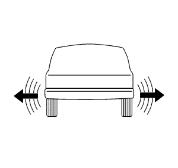

Diagnóstico de neumáticos - Queja de contoneo

El contoneo de los neumáticos es un movimiento de lado a lado en la parte delantera y/o trasera del vehículo. El contoneo puede deberse a las siguientes anomalías:
| • | La falta de rectitud de alguna banda de acero del interior de los neumáticos |
| • | Un alabeo lateral excesivo del neumático |
| • | Un alabeo lateral excesivo de la rueda |
El contoneo de los neumáticos se nota más a poca velocidad, a unos 8–48 km/h (5–30 mph). El contoneo puede aparecer como dureza de marcha a 80–113 km/h (50–70 mph). El contoneo puede aparecer como vibración a 80–113 km/h (50–70 mph).
Procedimiento de inspección
- Levante y sustente el vehículo con soportes de seguridad. Consultar Elevación del vehículo con un gato .
Advertencia : Lleve guantes al inspeccionar los neumáticos para impedir lesiones de las tiras de acero que sobresalen del neumático.
- Realice las siguientes comprobaciones preliminares:
| 2.1. | Marque el neumático con un rotulador para tomar nota de la posición de inicio y parada. |
| 2.2. | Gire cada neumático y la rueda con la mano. |
| 2.3. | Compruebe si el neumático tiene bultos o si las ruedas están deformadas. Sustitúyalos si es necesario. |
- Utilice un neumático de repuesto para localizar el neumático defectuoso. Siga estos pasos para realizar una comprobación con un neumático de repuesto:
| 3.1. | Para sustituir cada neumático, utilice otro semejante, uno a la vez. |
| 3.2. | Realice una prueba en carretera del vehículo. |
| 3.3. | Si el problema está relacionado con el neumático o la rueda, éste desaparecerá al quitar el neumático defectuoso del automóvil. |
| © Copyright Chevrolet Europe. All rights reserved |